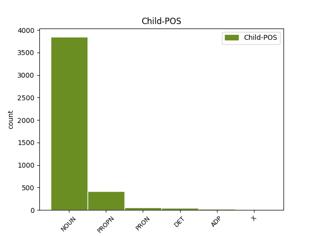

Distribution of features within this leaf

Agreement Rules sorted by frequency.
- When the dependent token is the modifer(mod) of the head token, and the head token is NOUN and the dependent token is NOUN.
1 Під _ _ _ _ 0 _ _ _
2 час _ _ _ _ 0 _ _ _
3 показу _ _ _ _ 0 _ _ _
4 у _ _ _ _ 0 _ _ _
5 США _ _ _ _ 0 _ _ _
6 , _ _ _ _ 0 _ _ _
7 що _ _ _ _ 0 _ _ _
8 розпочався _ _ _ _ 0 _ _ _
9 18 _ _ _ _ 0 _ _ _
10 вересня вересень NOUN Ncmsgn Animacy=Inan|Case=Gen|Gender=Masc|Number=Sing 0 _ _ _
11 2015 _ _ _ _ 0 _ _ _
12 року рік NOUN Ncmsgn Animacy=Inan|Case=Gen|Gender=Masc|Number=Sing 10 mod _ Id=39qx|LTranslit=rik|SpaceAfter=No|Translit=roku
13 , _ _ _ _ 0 _ _ _
14 протягом _ _ _ _ 0 _ _ _
15 першого _ _ _ _ 0 _ _ _
16 тижня _ _ _ _ 0 _ _ _
17 фільм _ _ _ _ 0 _ _ _
18 був _ _ _ _ 0 _ _ _
19 показаний _ _ _ _ 0 _ _ _
20 у _ _ _ _ 0 _ _ _
21 545 _ _ _ _ 0 _ _ _
22 кінотеатрах _ _ _ _ 0 _ _ _
23 і _ _ _ _ 0 _ _ _
24 зібрав _ _ _ _ 0 _ _ _
25 7 222 035 _ _ _ _ 0 _ _ _
26 $ _ _ _ _ 0 _ _ _
27 , _ _ _ _ 0 _ _ _
28 що _ _ _ _ 0 _ _ _
29 на _ _ _ _ 0 _ _ _
30 той _ _ _ _ 0 _ _ _
31 час _ _ _ _ 0 _ _ _
32 дозволило _ _ _ _ 0 _ _ _
33 йому _ _ _ _ 0 _ _ _
34 зайняти _ _ _ _ 0 _ _ _
35 5 _ _ _ _ 0 _ _ _
36 місце _ _ _ _ 0 _ _ _
37 серед _ _ _ _ 0 _ _ _
38 усіх _ _ _ _ 0 _ _ _
39 прем'єр _ _ _ _ 0 _ _ _
40 . _ _ _ _ 0 _ _ _
1 Вона _ _ _ _ 0 _ _ _
2 виявила _ _ _ _ 0 _ _ _
3 готовність _ _ _ _ 0 _ _ _
4 виплатити _ _ _ _ 0 _ _ _
5 за _ _ _ _ 0 _ _ _
6 93%-й _ _ _ _ 0 _ _ _
7 пакет _ _ _ _ 0 _ _ _
8 акцій _ _ _ _ 0 _ _ _
9 « _ _ _ _ 0 _ _ _
10 Криворіжсталі _ _ _ _ 0 _ _ _
11 » _ _ _ _ 0 _ _ _
12 24 _ _ _ _ 0 _ _ _
13 млрд _ _ _ _ 0 _ _ _
14 . _ _ _ _ 0 _ _ _
15 200 _ _ _ _ 0 _ _ _
16 млн _ _ _ _ 0 _ _ _
17 ₴ _ _ _ _ 0 _ _ _
18 . _ _ _ _ 0 _ _ _
19 ( _ _ _ _ 0 _ _ _
20 4 _ _ _ _ 0 _ _ _
21 , _ _ _ _ 0 _ _ _
22 8 _ _ _ _ 0 _ _ _
23 млрд _ _ _ _ 0 _ _ _
24 доларів долар NOUN Ncmpgn Animacy=Inan|Case=Gen|Gender=Masc|Number=Plur 0 _ _ _
25 США США PROPN Np-pgn Animacy=Inan|Case=Gen|Number=Ptan|Uninflect=Yes 24 mod _ Id=39m4|LTranslit=SŠA|SpaceAfter=No|Translit=SŠA
26 ) _ _ _ _ 0 _ _ _
27 , _ _ _ _ 0 _ _ _
28 що _ _ _ _ 0 _ _ _
29 в _ _ _ _ 0 _ _ _
30 2 _ _ _ _ 0 _ _ _
31 , _ _ _ _ 0 _ _ _
32 4 _ _ _ _ 0 _ _ _
33 рази _ _ _ _ 0 _ _ _
34 перевищує _ _ _ _ 0 _ _ _
35 стартову _ _ _ _ 0 _ _ _
36 ціну _ _ _ _ 0 _ _ _
37 і _ _ _ _ 0 _ _ _
38 в _ _ _ _ 0 _ _ _
39 5 _ _ _ _ 0 _ _ _
40 , _ _ _ _ 0 _ _ _
41 7 _ _ _ _ 0 _ _ _
42 рази _ _ _ _ 0 _ _ _
43 — _ _ _ _ 0 _ _ _
44 суму _ _ _ _ 0 _ _ _
45 , _ _ _ _ 0 _ _ _
46 отриману _ _ _ _ 0 _ _ _
47 за _ _ _ _ 0 _ _ _
48 підприємство _ _ _ _ 0 _ _ _
49 2004 _ _ _ _ 0 _ _ _
50 року _ _ _ _ 0 _ _ _
51 . _ _ _ _ 0 _ _ _
1 Для _ _ _ _ 0 _ _ _
2 його воно PRON Pp-3n-sgn Case=Gen|Gender=Neut|Number=Sing|Person=3|PronType=Prs 3 mod _ Id=2qsx|LTranslit=vono|Translit=joho
3 виготовлення виготовлення NOUN Ncnsgn Animacy=Inan|Case=Gen|Gender=Neut|Number=Sing 0 _ _ _
4 вовну _ _ _ _ 0 _ _ _
5 випарюють _ _ _ _ 0 _ _ _
6 у _ _ _ _ 0 _ _ _
7 гарячій _ _ _ _ 0 _ _ _
8 воді _ _ _ _ 0 _ _ _
9 3 _ _ _ _ 0 _ _ _
10 - _ _ _ _ 0 _ _ _
11 5 _ _ _ _ 0 _ _ _
12 годин _ _ _ _ 0 _ _ _
13 , _ _ _ _ 0 _ _ _
14 потім _ _ _ _ 0 _ _ _
15 промивають _ _ _ _ 0 _ _ _
16 в _ _ _ _ 0 _ _ _
17 холодній _ _ _ _ 0 _ _ _
18 річковій _ _ _ _ 0 _ _ _
19 воді _ _ _ _ 0 _ _ _
20 . _ _ _ _ 0 _ _ _
1 Одна _ _ _ _ 0 _ _ _
2 самка _ _ _ _ 0 _ _ _
3 відкладає _ _ _ _ 0 _ _ _
4 до до ADP Spsg Case=Gen 6 mod _ Id=2a64|LTranslit=do|Translit=do
5 100 _ _ _ _ 0 _ _ _
6 яєць яйце NOUN Ncnpgn Animacy=Inan|Case=Gen|Gender=Neut|Number=Plur 0 _ _ _
7 , _ _ _ _ 0 _ _ _
8 яйця _ _ _ _ 0 _ _ _
9 дрібні _ _ _ _ 0 _ _ _
10 . _ _ _ _ 0 _ _ _
1 Ще _ _ _ _ 0 _ _ _
2 1866 _ _ _ _ 0 _ _ _
3 р _ _ _ _ 0 _ _ _
4 . _ _ _ _ 0 _ _ _
5 Потебня _ _ _ _ 0 _ _ _
6 писав _ _ _ _ 0 _ _ _
7 : _ _ _ _ 0 _ _ _
8 " _ _ _ _ 0 _ _ _
9 ... _ _ _ _ 0 _ _ _
10 тепер _ _ _ _ 0 _ _ _
11 можна _ _ _ _ 0 _ _ _
12 напевне _ _ _ _ 0 _ _ _
13 сказати _ _ _ _ 0 _ _ _
14 , _ _ _ _ 0 _ _ _
15 що _ _ _ _ 0 _ _ _
16 поділ _ _ _ _ 0 _ _ _
17 руської _ _ _ _ 0 _ _ _
18 мови _ _ _ _ 0 _ _ _
19 давніший _ _ _ _ 0 _ _ _
20 від _ _ _ _ 0 _ _ _
21 XI _ _ _ _ 0 _ _ _
22 століття _ _ _ _ 0 _ _ _
23 і _ _ _ _ 0 _ _ _
24 вся _ _ _ _ 0 _ _ _
25 історія історія NOUN Ncfsnn Animacy=Inan|Case=Nom|Gender=Fem|Number=Sing 0 _ _ _
26 її її DET Pps3f-sna Case=Nom|Gender=Fem|Number=Sing|Person=3|Poss=Yes|PronType=Prs|Uninflect=Yes 25 mod _ Id=1a8v|LTranslit=jiji|SpaceAfter=No|Translit=jiji
27 , _ _ _ _ 0 _ _ _
28 базована _ _ _ _ 0 _ _ _
29 на _ _ _ _ 0 _ _ _
30 свідченні _ _ _ _ 0 _ _ _
31 пам’яток _ _ _ _ 0 _ _ _
32 , _ _ _ _ 0 _ _ _
33 має _ _ _ _ 0 _ _ _
34 діалектний _ _ _ _ 0 _ _ _
35 характер _ _ _ _ 0 _ _ _
36 і _ _ _ _ 0 _ _ _
37 являє _ _ _ _ 0 _ _ _
38 собою _ _ _ _ 0 _ _ _
39 історію _ _ _ _ 0 _ _ _
40 руських _ _ _ _ 0 _ _ _
41 наріч _ _ _ _ 0 _ _ _
42 , _ _ _ _ 0 _ _ _
43 зокрема _ _ _ _ 0 _ _ _
44 й _ _ _ _ 0 _ _ _
45 наріч _ _ _ _ 0 _ _ _
46 писемних _ _ _ _ 0 _ _ _
47 ... _ _ _ _ 0 _ _ _
1 Так _ _ _ _ 0 _ _ _
2 само _ _ _ _ 0 _ _ _
3 універсальними _ _ _ _ 0 _ _ _
4 були _ _ _ _ 0 _ _ _
5 означення _ _ _ _ 0 _ _ _
6 міст _ _ _ _ 0 _ _ _
7 — _ _ _ _ 0 _ _ _
8 город _ _ _ _ 0 _ _ _
9 дождєй _ _ _ _ 0 _ _ _
10 , _ _ _ _ 0 _ _ _
11 блядєй _ _ _ _ 0 _ _ _
12 і _ _ _ _ 0 _ _ _
13 воєнських воєнський X X Case=Gen|Foreign=Yes|Number=Plur 14 mod _ Id=0w7l|LTranslit=voěnśkyj|Translit=voěnśkych
14 частєй частєй X X Animacy=Inan|Case=Gen|Foreign=Yes|Gender=Fem|Number=Plur 0 _ _ _
15 . _ _ _ _ 0 _ _ _
1 Як _ _ _ _ 0 _ _ _
2 справжній _ _ _ _ 0 _ _ _
3 майстер _ _ _ _ 0 _ _ _
4 він _ _ _ _ 0 _ _ _
5 казав _ _ _ _ 0 _ _ _
6 , _ _ _ _ 0 _ _ _
7 що _ _ _ _ 0 _ _ _
8 захотіти _ _ _ _ 0 _ _ _
9 бути _ _ _ _ 0 _ _ _
10 міліціянтом _ _ _ _ 0 _ _ _
11 може _ _ _ _ 0 _ _ _
12 тільки _ _ _ _ 0 _ _ _
13 такий _ _ _ _ 0 _ _ _
14 , _ _ _ _ 0 _ _ _
15 що _ _ _ _ 0 _ _ _
16 не _ _ _ _ 0 _ _ _
17 хоче _ _ _ _ 0 _ _ _
18 нічого ніщо PRON Pz---n-gn Animacy=Inan|Case=Gen|PronType=Neg 0 _ _ _
19 справжнього справжнє NOUN Ao-nsgf Animacy=Inan|Case=Gen|Gender=Neut|Number=Sing 18 mod _ Id=0r3m|LTranslit=spravžńе|Translit=spravžńoho
20 робити _ _ _ _ 0 _ _ _
21 , _ _ _ _ 0 _ _ _
22 але _ _ _ _ 0 _ _ _
23 добре _ _ _ _ 0 _ _ _
24 їсти _ _ _ _ 0 _ _ _
25 . _ _ _ _ 0 _ _ _
1 Джон _ _ _ _ 0 _ _ _
2 почав _ _ _ _ 0 _ _ _
3 істерику _ _ _ _ 0 _ _ _
4 — _ _ _ _ 0 _ _ _
5 ю _ _ _ _ 0 _ _ _
6 , _ _ _ _ 0 _ _ _
7 факінґ факінґ X X Case=Nom|Foreign=Yes|Gender=Masc|Number=Sing|Uninflect=Yes 8 mod _ Id=0u3a|LTranslit=faking|Translit=faking
8 лама лама NOUN Ncmsny Animacy=Anim|Case=Nom|Gender=Masc|Number=Sing 0 _ _ _
9 , _ _ _ _ 0 _ _ _
10 я _ _ _ _ 0 _ _ _
11 приперся _ _ _ _ 0 _ _ _
12 аж _ _ _ _ 0 _ _ _
13 сюди _ _ _ _ 0 _ _ _
14 , _ _ _ _ 0 _ _ _
15 вичекав _ _ _ _ 0 _ _ _
16 кілька _ _ _ _ 0 _ _ _
17 годин _ _ _ _ 0 _ _ _
18 перед _ _ _ _ 0 _ _ _
19 твоїми _ _ _ _ 0 _ _ _
20 дверима _ _ _ _ 0 _ _ _
21 , _ _ _ _ 0 _ _ _
22 я _ _ _ _ 0 _ _ _
23 прийшов _ _ _ _ 0 _ _ _
24 до _ _ _ _ 0 _ _ _
25 тебе _ _ _ _ 0 _ _ _
26 дізнатися _ _ _ _ 0 _ _ _
27 , _ _ _ _ 0 _ _ _
28 чого _ _ _ _ 0 _ _ _
29 мені _ _ _ _ 0 _ _ _
30 треба _ _ _ _ 0 _ _ _
31 , _ _ _ _ 0 _ _ _
32 а _ _ _ _ 0 _ _ _
33 ти _ _ _ _ 0 _ _ _
34 питаєшся _ _ _ _ 0 _ _ _
35 , _ _ _ _ 0 _ _ _
36 чого _ _ _ _ 0 _ _ _
37 мені _ _ _ _ 0 _ _ _
38 треба _ _ _ _ 0 _ _ _
39 , _ _ _ _ 0 _ _ _
40 фак _ _ _ _ 0 _ _ _
41 ю _ _ _ _ 0 _ _ _
42 . _ _ _ _ 0 _ _ _
1 Після _ _ _ _ 0 _ _ _
2 проголошення _ _ _ _ 0 _ _ _
3 диктатури _ _ _ _ 0 _ _ _
4 ЗО ЗО PROPN Y Abbr=Yes|Animacy=Inan|Case=Gen|Gender=Fem|Number=Sing|Uninflect=Yes 0 _ _ _
5 УНР УНР PROPN Y Abbr=Yes|Animacy=Inan|Case=Gen|Gender=Fem|Number=Sing|Uninflect=Yes 4 mod _ Id=1yyh|LTranslit=UNR|Translit=UNR
6 функції _ _ _ _ 0 _ _ _
7 ДСВС _ _ _ _ 0 _ _ _
8 перейшли _ _ _ _ 0 _ _ _
9 частково _ _ _ _ 0 _ _ _
10 до _ _ _ _ 0 _ _ _
11 Начальної _ _ _ _ 0 _ _ _
12 Команди _ _ _ _ 0 _ _ _
13 УГА _ _ _ _ 0 _ _ _
14 , _ _ _ _ 0 _ _ _
15 а _ _ _ _ 0 _ _ _
16 частково _ _ _ _ 0 _ _ _
17 до _ _ _ _ 0 _ _ _
18 новоутвореної _ _ _ _ 0 _ _ _
19 військової _ _ _ _ 0 _ _ _
20 канцелярії _ _ _ _ 0 _ _ _
21 диктатора _ _ _ _ 0 _ _ _
22 ( _ _ _ _ 0 _ _ _
23 шеф _ _ _ _ 0 _ _ _
24 підполковник _ _ _ _ 0 _ _ _
25 К _ _ _ _ 0 _ _ _
26 . _ _ _ _ 0 _ _ _
27 Долежаль _ _ _ _ 0 _ _ _
28 ) _ _ _ _ 0 _ _ _
29 . _ _ _ _ 0 _ _ _
Disagree Examples:
1 У _ _ _ _ 0 _ _ _
2 домі дім NOUN Ncmsln Animacy=Inan|Case=Loc|Gender=Masc|Number=Sing 0 _ _ _
3 римського _ _ _ _ 0 _ _ _
4 патриція патрицій NOUN Ncmsgy Animacy=Anim|Case=Gen|Gender=Masc|Number=Sing 2 mod _ Id=0006|LTranslit=patrycij|Translit=patrycija
5 Руфіна _ _ _ _ 0 _ _ _
6 була _ _ _ _ 0 _ _ _
7 прегарна _ _ _ _ 0 _ _ _
8 фреска _ _ _ _ 0 _ _ _
9 , _ _ _ _ 0 _ _ _
10 зображення _ _ _ _ 0 _ _ _
11 Венери _ _ _ _ 0 _ _ _
12 та _ _ _ _ 0 _ _ _
13 Адоніса _ _ _ _ 0 _ _ _
14 . _ _ _ _ 0 _ _ _
1 У _ _ _ _ 0 _ _ _
2 домі _ _ _ _ 0 _ _ _
3 римського _ _ _ _ 0 _ _ _
4 патриція _ _ _ _ 0 _ _ _
5 Руфіна _ _ _ _ 0 _ _ _
6 була _ _ _ _ 0 _ _ _
7 прегарна _ _ _ _ 0 _ _ _
8 фреска _ _ _ _ 0 _ _ _
9 , _ _ _ _ 0 _ _ _
10 зображення зображення NOUN Ncnsnn Animacy=Inan|Case=Nom|Gender=Neut|Number=Sing 0 _ _ _
11 Венери Венера PROPN Npfsgy Animacy=Anim|Case=Gen|Gender=Fem|NameType=Giv|Number=Sing 10 mod _ Id=000d|LTranslit=Venera|Translit=Venery
12 та _ _ _ _ 0 _ _ _
13 Адоніса _ _ _ _ 0 _ _ _
14 . _ _ _ _ 0 _ _ _
1 Якось _ _ _ _ 0 _ _ _
2 зібралися _ _ _ _ 0 _ _ _
3 у _ _ _ _ 0 _ _ _
4 нього _ _ _ _ 0 _ _ _
5 , _ _ _ _ 0 _ _ _
6 ховаючися _ _ _ _ 0 _ _ _
7 від _ _ _ _ 0 _ _ _
8 переслідувань _ _ _ _ 0 _ _ _
9 , _ _ _ _ 0 _ _ _
10 одновірці одновірець NOUN Ncmpny Animacy=Anim|Case=Nom|Gender=Masc|Number=Plur 0 _ _ _
11 дружини дружина NOUN Ncfsgy Animacy=Anim|Case=Gen|Gender=Fem|Number=Sing 10 mod _ Id=000s|LTranslit=družyna|Translit=družyny
12 – _ _ _ _ 0 _ _ _
13 християнки _ _ _ _ 0 _ _ _
14 . _ _ _ _ 0 _ _ _
1 Це _ _ _ _ 0 _ _ _
2 одна _ _ _ _ 0 _ _ _
3 з _ _ _ _ 0 _ _ _
4 надзвичайно _ _ _ _ 0 _ _ _
5 важливих _ _ _ _ 0 _ _ _
6 сцен _ _ _ _ 0 _ _ _
7 у _ _ _ _ 0 _ _ _
8 драмі драма NOUN Ncfsln Animacy=Inan|Case=Loc|Gender=Fem|Number=Sing 0 _ _ _
9 Лесі Леся PROPN Npfsgy Animacy=Anim|Case=Gen|Gender=Fem|NameType=Giv|Number=Sing 8 mod _ Id=001r|LTranslit=Leśа|Translit=Lesi
10 Українки _ _ _ _ 0 _ _ _
11 « _ _ _ _ 0 _ _ _
12 Руфін _ _ _ _ 0 _ _ _
13 і _ _ _ _ 0 _ _ _
14 Прісцілла _ _ _ _ 0 _ _ _
15 » _ _ _ _ 0 _ _ _
16 . _ _ _ _ 0 _ _ _
1 Як _ _ _ _ 0 _ _ _
2 і _ _ _ _ 0 _ _ _
3 багато _ _ _ _ 0 _ _ _
4 інших _ _ _ _ 0 _ _ _
5 її _ _ _ _ 0 _ _ _
6 сюжетів _ _ _ _ 0 _ _ _
7 , _ _ _ _ 0 _ _ _
8 вона _ _ _ _ 0 _ _ _
9 виявилася _ _ _ _ 0 _ _ _
10 візіонерським _ _ _ _ 0 _ _ _
11 передбаченням _ _ _ _ 0 _ _ _
12 : _ _ _ _ 0 _ _ _
13 за _ _ _ _ 0 _ _ _
14 якесь _ _ _ _ 0 _ _ _
15 десятиліття _ _ _ _ 0 _ _ _
16 після _ _ _ _ 0 _ _ _
17 написання _ _ _ _ 0 _ _ _
18 твору _ _ _ _ 0 _ _ _
19 несамовиті _ _ _ _ 0 _ _ _
20 ревнителі ревнитель NOUN Ncmpny Animacy=Anim|Case=Nom|Gender=Masc|Number=Plur 0 _ _ _
21 нового _ _ _ _ 0 _ _ _
22 ладу лад NOUN Ncmsgn Animacy=Inan|Case=Gen|Gender=Masc|Number=Sing 20 mod _ Id=002l|LTranslit=lad|Translit=ladu
23 почали _ _ _ _ 0 _ _ _
24 нищити _ _ _ _ 0 _ _ _
25 культурні _ _ _ _ 0 _ _ _
26 скарби _ _ _ _ 0 _ _ _
27 , _ _ _ _ 0 _ _ _
28 до _ _ _ _ 0 _ _ _
29 того _ _ _ _ 0 _ _ _
30 ж _ _ _ _ 0 _ _ _
31 засобами _ _ _ _ 0 _ _ _
32 вони _ _ _ _ 0 _ _ _
33 володіли _ _ _ _ 0 _ _ _
34 непорівнянно _ _ _ _ 0 _ _ _
35 потужнішими _ _ _ _ 0 _ _ _
36 , _ _ _ _ 0 _ _ _
37 аніж _ _ _ _ 0 _ _ _
38 гнані _ _ _ _ 0 _ _ _
39 сектярі _ _ _ _ 0 _ _ _
40 при _ _ _ _ 0 _ _ _
41 початку _ _ _ _ 0 _ _ _
42 християнської _ _ _ _ 0 _ _ _
43 ери _ _ _ _ 0 _ _ _
44 . _ _ _ _ 0 _ _ _